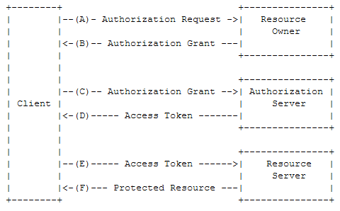
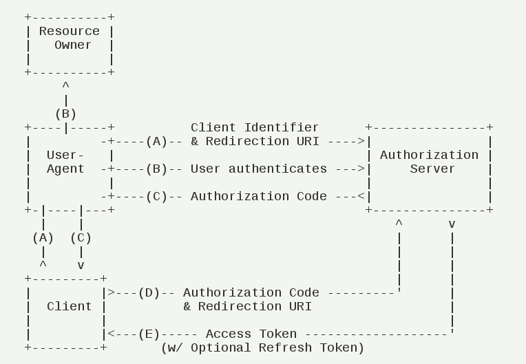

- 00 开篇词 怎样成长为优秀的软件架构师？.md
- 01 架构设计的宏观视角.md
- 02 大厦基石：无生有，有生万物.md
- 03 汇编：编程语言的诞生.md
- 04 编程语言的进化.md
- 05 思考题解读：如何实现可自我迭代的计算机？.md
- 06 操作系统进场.md
- 07 软件运行机制及内存管理.md
- 08 操作系统内核与编程接口.md
- 09 外存管理与文件系统.md
- 10 输入和输出设备：交互的演进.md
- 11 多任务：进程、线程与协程.md
- 12 进程内协同：同步、互斥与通讯.md
- 13 进程间的同步互斥、资源共享与通讯.md
- 14 IP 网络：连接世界的桥梁.md
- 15 可编程的互联网世界.md
- 16 安全管理：数字世界的守护.md
- 17 架构：需求分析 (上).md
- 18 架构：需求分析 (下) · 实战案例.md
- 19 基础平台篇：回顾与总结.md
- 20 桌面开发的宏观视角.md
- 21 图形界面程序的框架.md
- 22 桌面程序的架构建议.md
- 23 Web开发：浏览器、小程序与PWA.md
- 24 跨平台与 Web 开发的建议.md
- 25 桌面开发的未来.md
- 26 实战（一）：怎么设计一个“画图”程序？.md
- 27 实战（二）：怎么设计一个“画图”程序？.md
- 28 实战（三）：怎么设计一个“画图”程序？.md
- 29 实战（四）：怎么设计一个“画图”程序？.md
- 30 实战（五）：怎么设计一个“画图”程序？.md
- 31 辅助界面元素的架构设计.md
- 32 架构：系统的概要设计.md
- 33 桌面开发篇：回顾与总结.md
- 34 服务端开发的宏观视角.md
- 35 流量调度与负载均衡.md
- 36 业务状态与存储中间件.md
- 37 键值存储与数据库.md
- 38 文件系统与对象存储.md
- 39 存储与缓存.md
- 40 服务端的业务架构建议.md
- 41 实战（一）：“画图”程序后端实战.md
- 42 实战（二）：“画图”程序后端实战.md
- 43 实战（三）：“画图”程序后端实战.md
- 44 实战（四）：“画图”程序后端实战.md
- 45 架构：怎么做详细设计？.md
- 46 服务端开发篇：回顾与总结.md
- 47 服务治理的宏观视角.md
- 48 事务与工程：什么是工程师思维？.md
- 49 发布、升级与版本管理.md
- 50 日志、监控与报警.md
- 51 故障域与故障预案.md
- 52 故障排查与根因分析.md
- 53 过载保护与容量规划.md
- 54 业务的可支持性与持续运营.md
- 55 云计算、容器革命与服务端的未来.md
- 56 服务治理篇：回顾与总结.md
- 57 心性：架构师的修炼之道.md
- 58 如何判断架构设计的优劣？.md
- 59 少谈点框架，多谈点业务.md
- 60 架构分解：边界，不断重新审视边界.md
- 61 全局性功能的架构设计.md
- 62 重新认识开闭原则 (OCP).md
- 63 接口设计的准则.md
- 64 不断完善的架构范式.md
- 65 架构范式：文本处理.md
- 66 架构老化与重构.md
- 67 架构思维篇：回顾与总结.md
- 68 软件工程的宏观视角.md
- 69 团队的共识管理.md
- 70 怎么写设计文档？.md
- 71 如何阅读别人的代码？.md
- 72 发布单元与版本管理.md
- 73 软件质量管理：单元测试、持续构建与发布.md
- 74 开源、云服务与外包管理.md
- 75 软件版本迭代的规划.md
- 76 软件工程的未来.md
- 77 软件工程篇：回顾与总结.md
- 加餐 如何做HTTP服务的测试？.md
- 加餐 实战：“画图程序” 的整体架构.md
- 加餐 怎么保障发布的效率与质量？.md
- 热点观察 我看Facebook发币（上）：区块链、比特币与Libra币.md
- 热点观察 我看Facebook发币（下）：深入浅出理解 Libra 币.md
- 用户故事 站在更高的视角看架构.md
- 答疑解惑 想当架构师，我需要成为“全才”吗？.md
- 结束语 放下技术人的身段，用极限思维提升架构能力.md
- 课外阅读 从《孙子兵法》看底层的自然法则.md
43 实战（三）：“画图”程序后端实战
你好，我是七牛云许式伟。
在上一章，我们实现了一个 mock 版本的服务端，代码如下：
我们这一章实战的目标，是要把它改造成一个产品级的服务端程序。
前面两讲，我们一讲谈了 RESTful API 层，一讲谈了底层是业务逻辑的实现层。今天，我们要谈的是帐号（Account）与认证（Authorization）。
我们之前实现的 mock 版本服务端是匿名可访问的，不需要授权。在上一讲，我们开始引入了多租户，但为了简化，用的是一种 mock 的认证方式。
接下来我们就要动真格了。
但在此之前，我们仍然要先理解一下帐号和认证这两个概念。虽然这是两个大家非常耳熟能详的东西。
帐号（Account）
帐号，简单说就是某种表征用户身份的实体，它代表了一个“用户”。虽然一个物理的自然人用户可能会在同一个网站开多个帐号，但从业务角度，我们往往把这些帐号看作不同的用户。
互联网帐号的表征方式有很多，比较常见的有：
- 电子邮件；
- 手机号；
- 用户自定义的网络 ID；
- 自动分配的唯一 ID。
前三者大家容易理解。对于自动分配的 UUID，其实最典型的是银行。你的银行帐号从来都不是你自己定义的，而是预先分配好的一个卡号。
当然还有一些冷门的选择。比如有的网站选择用身份证号作为帐号 ID，这通常发生在政府公共服务类的业务。
授权（Authorization）
那么授权是什么？授权是帐号对服务的访问方式。
从这句话字面去理解，授权和帐号相关。有帐号，就会有授权。但是帐号和授权并不是对应的关系。同一个帐号，可能会有多种授权。
常见的授权机制有哪些？
前面我们在 “[40 | 服务端的业务架构建议]” 这一讲提过，当前主流的授权方式有两种：一种是基于 Token，一种是基于 AK/SK。
但实际上还有一种最常见的授权机制没有被提到，那就是：用户名+密码。
这里的 “用户名” 其实就是指 “帐号”。
当然，没有提的原因是因为当时我们是在讨论网络 API 协议的授权机制选择。我们在业界基本上看不到用 “用户名+密码” 来作为网络 API 的授权机制。
为什么不用？因为不安全。假如在每一次 API 请求中都带上密码，那么显然密码泄漏的概率会更大。
所以，安全性上的需求会导致我们倾向于尽可能减少密码在网络中传输的次数。“用户名+密码” 这种授权方式，必然会以尽可能少的频率去使用。
哪些情况会用 “用户名+密码” 授权？
其一，登录（login）。对于一个 Web 应用而言，授权的第一步是登录。登录最经典的方式就是 “用户名+密码” 授权。
“用户名+密码” 授权往往只发生在登录那一下，登录后就会生成一个会话（Session）用途的 Cookie。此后 Web 应用的授权都基于 Session，直到 Session 过期。
抱歉，我们的词汇有点贫乏。这里说的 Session 授权，和浏览器引入的 Session 不是一回事。Session 授权发生在登录之后，一般并不会随浏览器窗口的关闭而消失，往往有几天的有效期。
甚至有一些网站的 Session 有效期会自动顺延。也就是说，只要你在会话期内活跃的话，Session 授权就不会过期。超时时间从你最后一次活动算起，只有你连续几天都不活跃才会导致 Session 过期。
其二，作为 Token 授权的入口。其实 RESTful API 层中的 Token 授权，和 Web 应用中的 Session 授权的地位是非常像的。
Session 授权会有过期时间，Token 授权也会有过期时间。Session 授权有自动顺延，Token 授权有 Refresh。Session 授权的典型入口是登录（login），Token 授权也一样有 “用户名+密码” 授权这个入口。
这样来看，Token 授权和 Session 授权的差别只是应用场景不同，一个用于 API 层，一个用于 Web。而这也导致承载它们的机制有些不同，Token 授权基于 HTTP 的 Authorization 头，而 Session 授权则基于 Cookie。
OAuth 2.0
由于 QPaint 程序是一个 To C 的应用，所以在 API 层的授权机制选择上，我们很自然会选择 Token 授权。
当前推荐的 Token 授权标准是 OAuth 2.0，它得到了广泛的支持，如果你在使用各类 C 端应用程序的开放接口，会发现它们往往都是基于 OAuth 2.0 的。
有两种场景下我们会考虑 OAuth 2.0。
第一种场景，也是 OAuth 的核心场景，就是提供开放接口。
对于一个服务提供方来说，通过推广自己的 App ，来让更多用户使用自己的服务是一个常规的办法。但还有一个非常值得考虑的方式，就是把服务以 API 方式开放出来，让更多的 App 接入自己的服务。
一旦我们希望授权第三方应用程序来调用我们的服务，最好的选择是 OAuth 2.0。
第二种场景，是作为 OpenID 提供方。也就是说，第三方应用接入我的 OAuth 接口，并不是为了要调用我的什么能力，而只是为了复用我的用户。
这当然不是谁都能够做得到的，还是要有足够大的用户基数，并且有一定的入口价值才有可能被接受。国内被广泛使用的典型 OpenID 提供方有：
- 微信和 QQ；
- 支付宝；
- 新浪微博。
为了支持 OAuth 2.0 作为 OpenID 的场景，OpenID Foundation 还专门引入了 OpenID Connect 协议规范。详细资料如下：
今天我们重点还是关注 OAuth 2.0 的核心场景。它涉及到以下三个角色：
- 服务提供商。包括授权服务（Authorization Server）和资源服务（Resource Server）。
- 终端用户，也就是资源拥有方（Resource Owner）。终端用户是服务提供商的用户，它的资源也存在于服务提供商提供的服务中。但是这些资源的归属是属于终端用户的，所以我们称之为资源拥有方。
- 第三方应用，也就是客户端（Client）。在 OAuth 的视角中，官方应用和第三方应用并无大的区别，以相同的机制在工作。从这一点来说，称之为客户端会更加合理。
这三个角色交互的基本场景是：
首先，第三方应用，也就是客户端（Client），向服务提供商提出接入申请。这一步可以理解为类似把 App 注册到应用商店的过程，每个应用只需要做一次。
然后，客户端（Client）向终端用户，也就是资源拥有方（Resource Owner）申请访问权限。这个申请发生在服务提供商提供的环境中，所以服务提供商可以感知资源拥有方是拒绝，还是接受了客户端的请求。
然后，客户端（Client）向服务提供商的授权服务（Authorization Server）发起授权请求，并得到了可用于访问资源的 Token。
最后，客户端（Client）通过 Token 向服务提供商的资源服务（Resource Server）发起资源访问请求。
整个过程的具体流程如下：

（A）终端用户打开客户端以后，客户端要求终端用户给予授权。- （B）终端用户同意给予客户端授权。- （C）客户端使用上一步获得的授权，向认证服务器申请令牌（Token）。- （D）认证服务器对客户端进行认证以后，确认无误，同意发放令牌。- （E）客户端使用令牌，向资源服务器申请获取资源。- （F）资源服务器确认令牌无误，同意向客户端开放资源。
这个图体现了 OAuth 2.0 的核心思想。但不同场景下，具体的授权流程有一定的差异。常见的授权模式有如下几种：
- 授权码模式（Authorization Code）；
- 简化模式（Implicit）；
- 用户名+密码模式（Resource Owner Password Credentials）；
- 客户端模式（Client Credentials）；
- 访问令牌（Access Token）；
- 更新令牌（Refresh Token）。
其中，基于访问令牌（Access Token）的授权模式是最核心的一种，请求频率最大。更新令牌（Refresh Token）则次之。每次访问令牌（Access Token）失效后，通过更新令牌（Refresh Token）获得新的访问令牌（Access Token）。
其他所有的授权方式，是在不同场景下的授权入口。通过这些授权入口的任何一个都可以同时获得访问令牌（Access Token）和更新令牌（Refresh Token）。
用户名+密码模式（Resource Owner Password Credentials）不用过多解释，这是我们最为熟悉的一种授权方式。
我们重点解释下授权码模式（Authorization Code），这是 OAuth 作为第三方开放接口用的最多的一种场景。它的业务流程如下：

（A）终端用户访问某个网站，客户端（通常是一个标准的浏览器）将终端用户重定向到认证服务。- （B）终端用户选择是否给予该网站相应的授权。- （C）如果授权，认证服务器将用户导向网站事先指定好的 “重定向URI”（Redirection URI），同时附上一个授权码。- （D）该网站收到授权码，附上早先的 “重定向URI”，向认证服务器申请令牌。这一步是在网站的后端服务器上完成的，对终端用户不可见。- （E）认证服务器核对了授权码和重定向URI，确认无误后，网站的后端服务器返回访问令牌（access token）和更新令牌（refresh token）。
此后，该网站就可以通过后端服务器去访问相应的服务了。
结语
今天我们主要聊了帐号与授权相关的基础体系，重点介绍 OAuth 2.0 背后的逻辑。下一讲我们会讨论如何基于 OAuth 来完成 QPaint 的帐号与授权机制。
如果你对今天的内容有什么思考与解读，欢迎给我留言，我们一起讨论。下一讲开始我们继续实战。
如果你觉得有所收获，也欢迎把文章分享给你的朋友。感谢你的收听，我们下期再见。
© 2019 - 2023 Liangliang Lee. Powered by gin and hexo-theme-book.